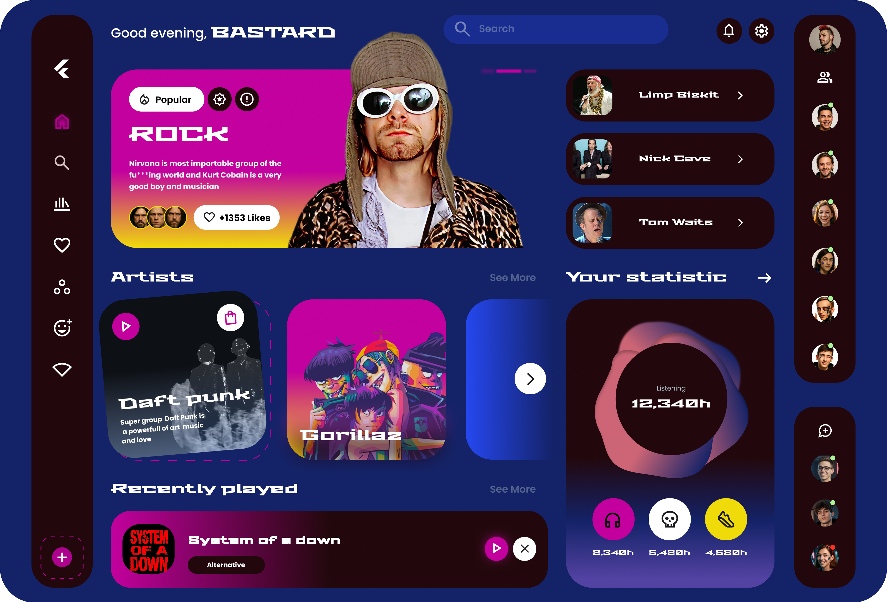
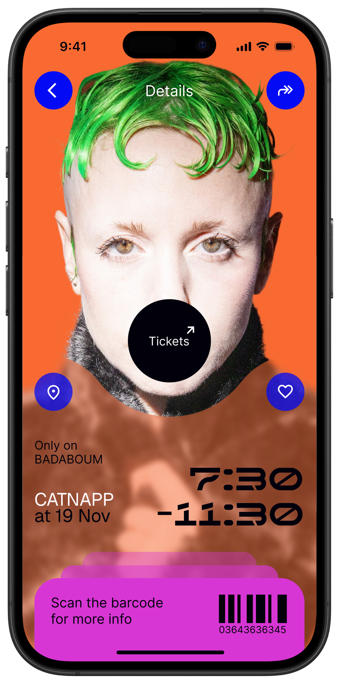
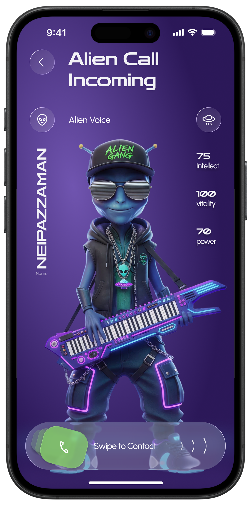
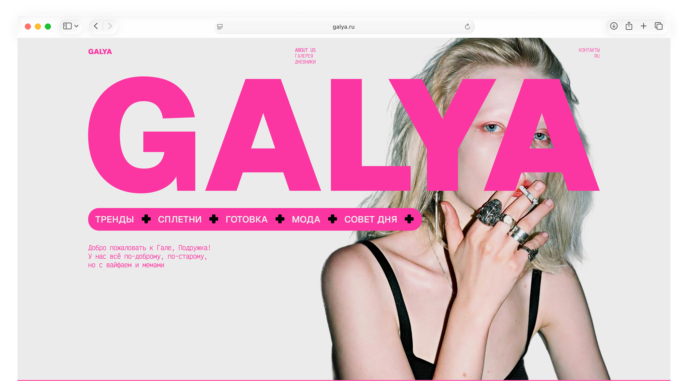

Мобильный инструмент
для создания визуального AI-контента
Даниил Троянов
Продуктовый дизайнер с художественным бэкграундом.
Проектирую B2C AI-продукты с нуля —
от первого сценария до интерактивного прототипа
Мобильный инструмент
для создания визуального AI-контента
Веб-платформа
для создания AI-сцен с режиссёрским контролем
Мобильный ассистент
для независимых художников



